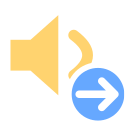
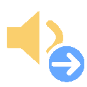
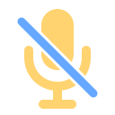
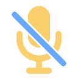
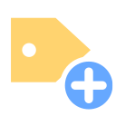
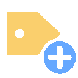
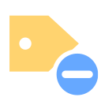
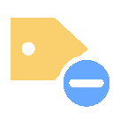

Doce variantes de los iconos existentes y una nueva ilustración del personaje para tickets. Propuestas originales pendientes de aprobación; no publicadas en Discord ni conectadas al backend. Los GIF son ilustrativos, no representan actividad en vivo.
M01 · Miembro entró
Miembros
EstáticoGIF
Deslizamiento breve de la flecha de entrada.
M02 · Miembro salió
Miembros
EstáticoGIF
Deslizamiento breve de la flecha de salida.
M03 · Entró a voz
Voz

Estático
GIFFlecha de entrada; altavoz estable.
M04 · Salió de voz
Voz
Flecha de salida; altavoz estable.
M05 · Micrófono silenciado
Voz

Estático
GIFLa diagonal atraviesa el micrófono y permanece visible; énfasis suave del trazo.
M06 · Micrófono habilitado
Voz
EstáticoGIF
Énfasis suave del indicador habilitado.
M07 · Transmisión iniciada
Voz
EstáticoGIF
Énfasis del triángulo de inicio.
M08 · Transmisión terminada
Voz
EstáticoGIF
Asentamiento del indicador de fin.
M09 · Mensaje editado
Mensajes
EstáticoGIF
Trazo corto del lápiz; el globo conserva su forma.
M10 · Mensaje borrado
Mensajes
Énfasis breve de la cruz de eliminación.
M11 · Rol concedido
Roles

Estático
GIFÉnfasis del signo más sin cambiar su significado.
M12 · Rol retirado
Roles

Estático
GIFÉnfasis del signo menos sin convertirlo en cruz.
Para el panel de tickets o la guía de soporte. Conserva la referencia del personaje y no reemplaza avatar/banner. El PNG grande no se propone como emoji diminuto.